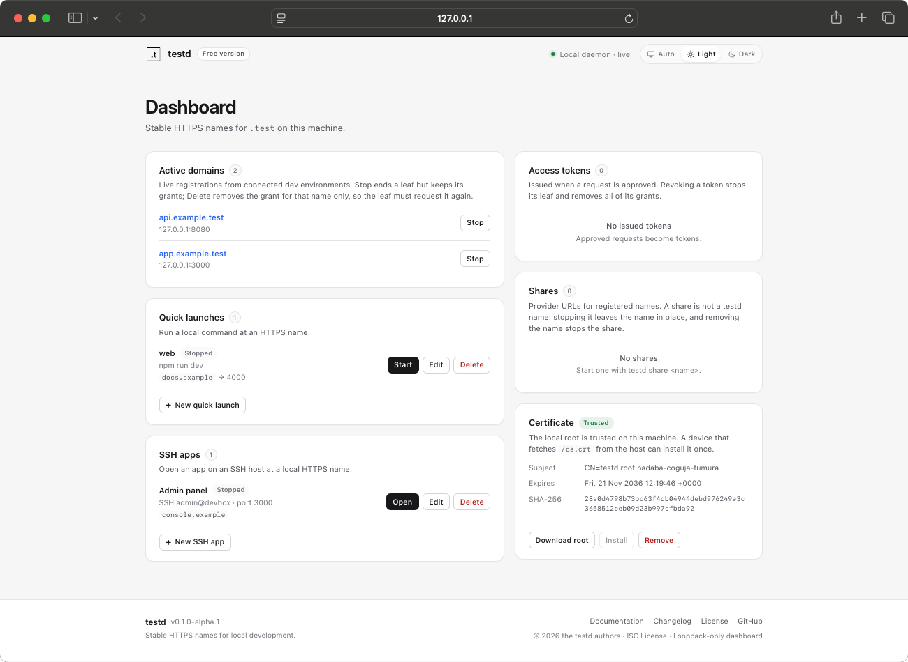

Stable HTTPS names for dev servers, wherever they run.
testd gives a project a real address like https://app.example.test on the machine
where your browser runs, whether the project runs locally, in a container, a VM, WSL, or on a
remote box.
A name lives as long as the connection that registered it. Close the terminal and the name is gone.
testd run app.example:3000 -- npm run dev
Then open https://app.example.test. The host adds .test itself.
Four worlds, one testd link each. A name stays live while its link is open.
- No
/etc/hostsedits - Noper-project certificates
- Noseparate reverse proxy to run
- Noaccount, telemetry, or public DNS
How it works
There are two sides: the machine with your browser, and wherever your code runs.
- Host
-
The machine with your browser. It runs the desktop app or
testd host, which answers*.testDNS locally, terminates HTTPS with certificates minted from its own certificate authority, and proxies each request to the live app. The desktop app does the one-time steps in a guided setup page.testd init # config, local CA, operator secret testd doctor --fix # .test resolver and root trust; asks for administrator rights testd host # run the daemon - Leaf
-
Wherever your code runs: the same machine, a container, a VM, WSL, or a remote box.
testd runkeeps one outbound connection open to the host and registers the names you ask for. The dev server can stay plain HTTP. - Lease
-
The connection is the lease. Press Ctrl+C, stop the wrapped command, or lose the network, and the host releases the names. A running leaf that drops reconnects every few seconds and registers again without a new approval, as long as its token and grants still exist.
- Names
-
Write names as
service.project, such asapp.exampleandapi.example. The host appends.test. Two labels give browsers a registrable domain, so cookies behave as they do onapp.example.comandapi.example.com. A single label likeappworks, but it is cross-site with every other project, and testd warns you.
Wherever the code runs
- This machine
-
Register a port from a project directory, or wrap the command that starts the server. The name lives as long as the command.
testd run :3000 # name taken from the folder testd run frontend:3000 api:8080 -- npm run dev # several names, one command - Container, VM, WSL
-
Pair once, and compare the verification codes shown on both sides. The first run then asks the host for permission to publish; approve it in the dashboard or with
testd approve, and the leaf keeps its token. The host listens on loopback by default, so set[host] listen_addrto an address the leaf can reach, and never expose port 7737 to the public internet.testd pair 192.168.1.5 testd run --host 192.168.1.5 :3000 - Over SSH
-
Open the dashboard, choose SSH apps, and enter the host alias you pass to
ssh, the remote port, and a local name. testd uses your OpenSSH setup and shows passphrase and host-key prompts in the dashboard. It can also start and stop the remote command, on Linux and macOS hosts. No port needs to open on your machine. - Share
-
Names are reachable only from the host and devices that trust its root. To show one to a phone, a webhook, or a colleague, share it through a tunnel.
testd share app.example # cloudflared, public testd share app.example --provider tailscale # tailnet onlyProvider Reaches Needs cloudflared, the defaultPublic internet cloudflaredonPATH; a quick tunnel, no accountngrokPublic internet ngrokonPATH, andngrok config add-authtokenoncetailscaleYour tailnet tailscaleonPATH; one share at a timeA public share is a public route to the app. Providers run as spawned processes: no SDK, no account integration.
On the host
- Desktop app
-
A tray or menu bar app that runs the host daemon. The first launch opens guided setup in your browser: the
.testDNS resolver, the local root certificate, and the operator secret. Launch at login stays off until you tick it. - Dashboard
-
Live names, quick launches, SSH apps, access requests, tokens, shares, and the root certificate, updating without a reload. Open it from the tray, or run
testd dashboard.
The local dashboard, running on the host - Doctor
-
testd doctorchecks configuration, DNS, certificates, root trust, and the HTTPS edge. Exit code0means ready;1configuration,2resolver,3HTTPS edge or trust.--fixrepairs what it can, and--jsonis for scripts.
What it trusts
testd is a local development tool for machines you control. It is not a production ingress controller, a public DNS server, or a multi-tenant platform.
- Root key
-
The root CA private key never leaves the host. Leaf certificates last 24 hours and are minted when a name goes live.
- Pairing
-
A remote leaf compares a 128-bit TLS-bound code with the host before it sends any token. There is no plaintext fallback.
- Grants
-
A token publishes only the names you approved, and you can revoke it on its own. Revoking closes its connections and releases its names.
- Dashboard
-
Reaching loopback grants nothing. Each daemon run has its own bearer token, and every change also needs a request header.
- Exposure
-
.testDNS listens on loopback only, and tunnels start only when you runtestd share. - Does not
-
- Send telemetry, usage data, or names anywhere
- Depend on public DNS or ACME
- Link a vendor SDK for tunnels; providers are spawned processes
- Offer a remote administration API
- Keep a name past its connection: a sleeping laptop takes its names with it
Install
testd ships as two binaries that share one configuration, certificate authority, and dashboard. The desktop app runs the host from your tray. The CLI registers projects, and can also run the host without a desktop.
- Desktop app
-
Open
Testd___TESTD_VERSION___aarch64.dmgand drag Testd.app into Applications. Intel Macs usex64.dmg, best effort. Or downloadtestd-gui.rbfrom the release and runbrew install --cask ./testd-gui.rb. - CLI
-
curl -fsSL https://testd.dev/install.sh | shThe installer verifies
SHA256SUMSand putstestdin~/.local/bin.
- Desktop app
-
Use
Testd___TESTD_VERSION___x64.deb, or runTestd___TESTD_VERSION___x64.AppImage. Both are built for x86_64 with GNU libc; Debian 13 is the baseline and other distributions are best effort. Binding port 443 needsCAP_NET_BIND_SERVICEon the tray binary: see privileged ports.sudo apt install ./Testd___TESTD_VERSION___x64.deb - CLI
-
curl -fsSL https://testd.dev/install.sh | shThe installer verifies
SHA256SUMS, picks GNU libc or static musl, and putstestdin~/.local/bin.
- Desktop app
-
Run
Testd___TESTD_VERSION___x64-setup.exe, a per-user installer. Administrator rights are needed only when setup configures DNS and root trust. - CLI
-
Download
testd-__TESTD_VERSION__-x86_64-pc-windows-msvc.zipandSHA256SUMSfrom the release, check the checksum, and puttestd.exeon yourPATH. It needs no Visual C++ redistributable.
This is an unsigned alpha. Windows artifacts have no Authenticode signature and macOS artifacts are not
Developer ID signed or notarized, so your system may ask you to confirm opening the app. Check
SHA256SUMS on every download. Packages are on
GitHub Releases. The
quickstart covers every route, including installing from source.
| System | Architecture |
|---|---|
| Windows 10 22H2 | amd64 |
| Linux, Debian 13 baseline | amd64 |
| macOS 15 | arm64 |
| macOS 26 | arm64 |
Other Linux distributions and Intel macOS are best effort.